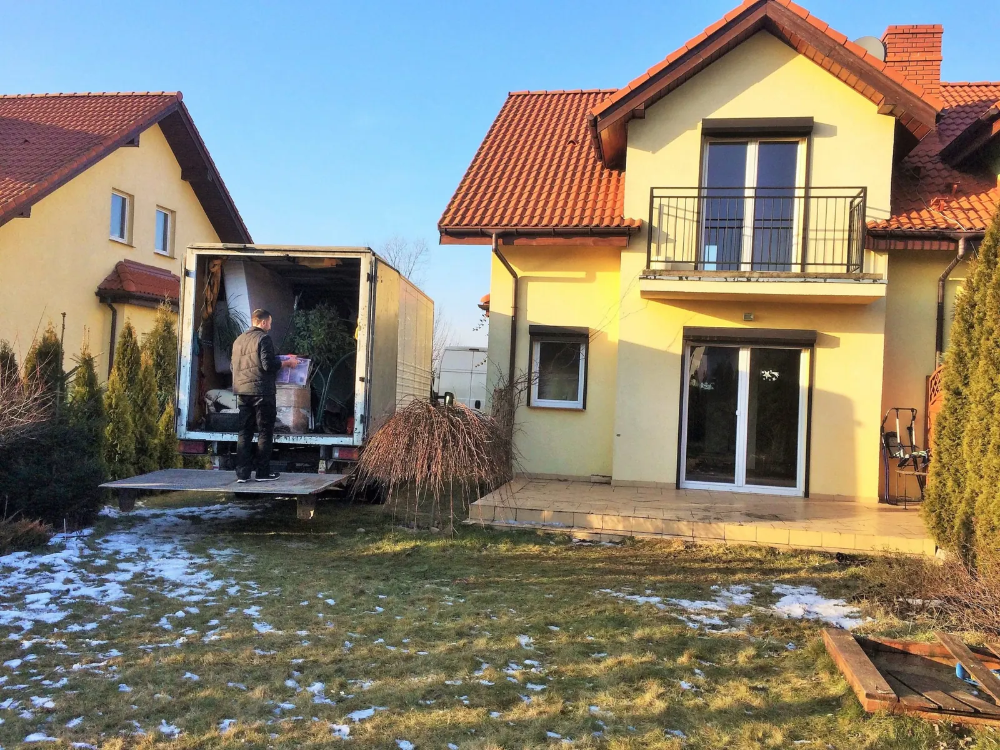
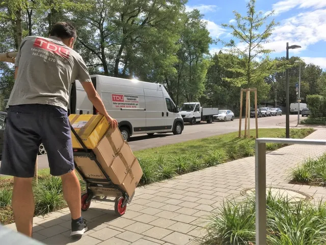
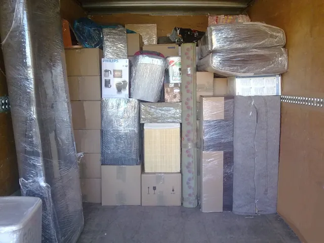

Strona główna / Międzynarodowe / Niemcy - Polska
Przeprowadzki Niemcy - Polska
Stałe kursy między Polską a Niemcami: do Berlina, Zagłębia Ruhry, Nadrenii, Bawarii i Saksonii. Odbieramy z dowolnego miejsca w obu krajach.
Zwykle w dobę od zamówienia
Jeździmy między Polską a Niemcami regularnie, dlatego w większości przypadków załadunek i pokonanie całej trasy zajmują nie więcej niż dobę od przyjęcia zamówienia.
Przewozimy całe mieszkania i domy, ale też pojedyncze przedmioty, standardowe i nietypowe. Wykonujemy też przewozy na terenie samych Niemiec.
Masz tylko jeden pakunek? Też zadzwoń. Gdy możemy zabrać Twój ładunek na trasie, którą i tak jedziemy, oszczędzasz nawet do 50% ceny.
W cenie usługi
- Ubezpieczenie na 500 000 zł w Ergo Hestia lub wyższe na życzenie
- Auta z windą załadowczą: 17 m3, 22 m3 i ciężarówki 40 m3
- Bez pośredników, przeładunków, kurierów i spedycji
- Załadunek i zabezpieczenie mienia w aucie
- Materiały pakowe i plastikowe pojemniki
- Montaż i demontaż, wnoszenie i znoszenie, magazynowanie
Ceny najczęstszych tras
Średnie ceny usług transportowo-przeprowadzkowych liczone w jedną stronę. Dokładną cenę podajemy po wycenie, zależnie od ilości rzeczy, auta i terminu.
- PoznańBerlin900 - 1100 zł
- WarszawaHannover1600 - 1800 zł
- KrakówMonachium1900 - 2200 zł
- DortmundWrocław1500 - 1700 zł
- HamburgGdańsk1700 - 2000 zł
- StuttgartKatowice2100 - 2300 zł
- KoloniaWarszawa2300 - 2600 zł
Przeprowadzki za zachodnią granicę



